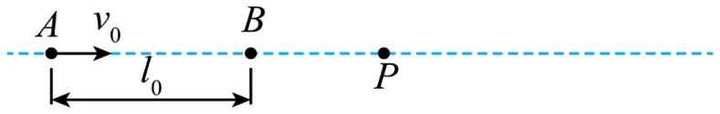

两个电性相同、质量分别为 m、4m 的粒子 A、B，初始相距 l₀。A 以 v₀ 沿连线向静止的 B 运动，此时系统电势能 Eₚ₀ = 2mv₀²/15。
经时间 t₁，B 到达 P 点，此时两粒子速度相同，同时给 B 施加恒力 F（与速度同向）。当 B 的速度为 v₀ 时，A 恰好运动到 P 点且速度为 0，间距恢复为 l₀，撤去 F。求（m、l₀、v₀、t₁ 已知）：

虚线为两粒子连线｜A 以 v₀ 向右追静止的 B，初始相距 l₀｜P 是 B 与 A 共速时的位置
| 时刻 | 总动量 p | 动能 Eₖ | 电势能 Eₚ | F 做功 | 间距 r/l₀ |
|---|---|---|---|---|---|
| 初始 | 1.00 | 0.500 | 0.133 | 0 | 1.000 |
| ① 共速（B 到 P） | 1.00 守恒 | 0.100 | 0.533 | 0 | 0.250 |
| ② B 到 v₀（A 停在 P） | 4.00 变了 | 2.000 | 0.133 | 1.50 | 1.000 |
账本闭合：Eₖ+Eₚ 从 0.633 涨到 2.133，差值 1.50 正好等于 F 做的功。
电势能首末都是 0.133——走一圈回到原点，所以第（3）问可以直接把势能消掉，只算外力做功和动能变化。
数值以 m v₀² 为单位，长度以 l₀ 为单位。
（1）只有内力 → 动量守恒
（2）能量定“靠多近”，动量定“谁走多少”
共速时设间距 r、势能 Eₚ₁，能量守恒：
得 Eₚ₁ = 8mv₀²/15。又 Eₚ ∝ 1/r，故
再用动量守恒的位移形式（等价于质心匀速）：
联立得
（3）全过程：势能首末相消，只剩外力做功
初末间距都是 l₀，Eₚ 不变。恒力只作用在第二阶段，B 位移 l₀：
全过程动量定理（初 mv₀，末 4mv₀）：
不少整理版把 Eₚ₀ 写成 mv₀²/25。这一个数错了，第（2）问全错：
| 错版（Eₚ₀=mv₀²/25） | 原卷（Eₚ₀=2mv₀²/15） | |
|---|---|---|
| 共速时 Eₚ₁ | 11mv₀²/25 | 8mv₀²/15 |
| 共速时间距 r | l₀/11 | l₀/4 |
| 第（2）问 x_B | v₀t₁/5 − 2l₀/11 | v₀t₁/5 − 3l₀/20 |
（1）（3）两问与 Eₚ₀ 无关，所以错版不露馅——这是它最危险的地方。
两种方法交叉验证 −3l₀/20：① 质心法（x_C=v₀t₁/5，B 到质心距离由 l₀/5 变 r/5）；② 动量位移法（上式）。两法一致。
我把第二阶段按真实库仑力 F = Eₚ/r 积分了一遍（m、v₀、l₀ 归一化）：
但答案仍然是对的。因为题目问的三个量全部来自能量与动量的记账，不依赖轨迹。这是“账本自洽、轨迹不自洽”的题，压轴题里并不罕见。
有尖子生真去积分，会撞上这个矛盾。建议话术：“这道题考的是守恒量怎么记账，不是轨迹怎么走；真按库仑力求轨迹，题目给的末态到不了。”这句话说出去，学生反而服。
三问正好是三大观点的一次巡礼：（1）动量守恒（瞬时）→（2）能量 + 动量的位移形式（过程）→（3）功能关系 + 动量定理（全过程，势能相消）。
为什么（3）能用动量定理？因为库仑力是内力，全程不改变总动量——只有 F 能改。